유통관리사-2급 (2014-04-13 기출문제)
1과목: 유통물류일반
1. 전통시장 및 상점가 육성을 위한 특별법(법률 제 11847호, 시행 2014.1.1.)에서 사용하는 전통시장에 대한 내용과 거리가 먼 것은?
- 전통시장이란 자연발생적으로 또는 사회적, 경제적 필요에 의해 조성된 것이다.
- 상품이나 용역의 거래가 상호신뢰에 기초하여 주로 전통적 방식으로 이루어진다.
- 용역 제공 장소의 범위에 해당하는 점포수가 전체 점포수의 2분의 1 미만이어야 한다.
- 해당 구역 및 건물에 시장이나 군수가 정하는 수 이상의 점포가 밀집한 곳이다.
- 점포에 제공되는 건축물과 편의시설이 점유하는 토지면적의 합계가 1천 제곱미터 이상인 곳이다.
(정답률: 52%)

2. 기업의 사회적 책임들 중 나머지 내용과 성격이 다른 하나는?
- 기업의 유지 발전에 대한 책임
- 소유주 또는 주주에 대한 책임
- 종업원에 대한 책임
- 소비자에 대한 책임
- 지역사회 및 정부에 대한 책임
(정답률: 57%)
3. 효과적인 서비스의 분류기준으로 가장 거리가 먼 것은?
- 서비스 활동과 서비스를 받아들이는 주체에 의한 분류
- 고객과의 관계유형에 의한 분류
- 고객 서비스 요금에 의한 분류
- 서비스의 추상성 정도에 의한 분류
- 서비스 전달에 있어 개인화와 재량에 의한 분류
(정답률: 46%)
4. 경로성과를 평가하는'재무비율을 결합한 전략적 이익모형'에 대한 설명으로 틀린 것은?
- 기업의 중요한 재무적 목표는 순자본투자에 대한 충분한 수익률을 올리는 것이다.
- 투자수익률이 저조한 기업은 시장점유율을 높여야 한다.
- 투자수익률이 저조한 기업은 이익마진을 높여야 한다.
- 투자수익률이 저조한 기업은 레버리지효과를 높여야 한다.
- 투자수익률이 저조한 기업은 자산회전율을 높여야 한다.
(정답률: 34%)
5. 물류의 목표인 3S1L원칙과 관련 없는 것은?
- 단순(Simple)
- 확실(Surely)
- 신속(Speedy)
- 저렴(Low)
- 안전(Safety)
(정답률: 66%)
6. 목표에 의한 관리(MBO)이론에 대한 설명으로 가장 옳은 것은?
- 장기계획이 만들어질 수 있는 상대적으로 안정적인 상황에서 효율적이다.
- 긍정적 또는 부정적 강화요인들이 사람들을 특정방식으로 행동하게 한다는 이론이다.
- 최대한의 목표를 제시함으로써 종업원에게 동기부여할 수 있다는 이론이다.
- 종업원이 특정 작업에 투여하는 노력의 양은 기대하는 결과물에 따라 달라진다.
- 종업원은 다른 사람과 보상을 비교하여 노력과 보상 간에 공정성을 유지하려 한다.
(정답률: 36%)
7. 유통경영전략의 수립과 실행의 단계로 바르게 짝지어진 것은?
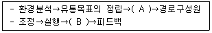
- A: 물류관리, B: 갈등관리
- A: 포지셔닝, B: 영향력 행사
- A: 소매상 선정, B: 전략 재수립
- A: 유통경로구조의 설계, B: 성과평가
- A: 시장세분화, B: 갈등관리
(정답률: 75%)
8. 주요 재무비율과 관련된 설명 중 옳지 않은 것은?
- 유동성비율은 단기부채상환을 위해 자산을 현금화할 수 있는 기업의 능력을 측정한다.
- 수익성비율은 기업이 이익을 얻기 위해 다양한 자원을 얼마나 효율적으로 사용하는지를 측정한다.
- 레버리지비율은 총부채를 자기자본으로 나누어서 구한다.
- 활동성비율은 평균재고를 매출원가로 나누어서 구한다.
- 유동비율은 유동자산을 유동부채로 나누어서 구한다.
(정답률: 37%)
9. 참여적(민주적) 리더십에 대한 설명으로 옳은 것은?
- 관리자가 잠정적인 결정사항에 대해 발표하는 형태를 취하기도 한다.
- 부하들의 절대적인 복종이 필요한 위기상황에서 특히 유효하다.
- 관리자가 목표를 설정하면 종업원은 비교적 자유로운 방법으로 일한다.
- 의사나 엔지니어 등의 전문직을 상대하는 관리직에 적합하다.
- 비숙련 근로자들을 지휘해야 하는 상황에서 효과적이다.
(정답률: 35%)
10. 다음 설명에 적합한 경영혁신기법은?
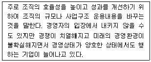
- 벤치마킹(benchmarking)
- 리스트럭처링(restructuring)
- 영업양도(divestiture)
- 현상유지전략(stability strategy)
- 수직적 통합(vertical integration)
(정답률: 57%)
11. SWOT분석에 따른 각 상황에서의 전략 중 옳은 것은?
- SO상황: 소비자의 기호 변화가 있을 수도 있어서 안정성장전략을 사용한다.
- ST상황: 정부의 새로운 규제가 생길 수도 있어서 내부강점을 이용한 전략을 사용한다.
- SO상황: 새로운 시장이 발견될 수 있기에 벤치마킹을 활용한다.
- WT상황: 철수하거나 시장 선점전략을 사용한다.
- WO상황: 자사의 강점을 살려 공격적 확장전략을 사용한다.
(정답률: 45%)
12. 포터(Porter, M.)는 산업의 경쟁구조에서 수익성을 결정짓는 다섯 가지 요인을 제시하였다. 다음 보기 중에서 이에 적합하지 않은 요인은?
- 신규 기업의 참여
- 대체품의 위협
- 공급자의 교섭력
- 기존 기업들간의 경쟁
- 기술경쟁력
(정답률: 40%)
13. 손익분기점 분석에 대한 설명으로 가장 옳지 않은 것은?
- 손익분기점에서의 손익은 0이다.
- 손익분기점 분석에서는 비용을 고정비와 변동비로 나누어 매출액과의 관계를 분석한다.
- 손익분기점 분석을 통해 목표이익을 얻기 위한 매출액을 계산할 수 있다.
- 손익분기점 판매량 = 총변동비/(단위당 판매가 - 단위당 고정비)
- 매출액이 손익분기점을 넘어서면 이익이 발생하고 손익분기점을 밑돌면 손실이 발생한다.
(정답률: 47%)
14. 도매상의 경쟁력을 향상시키기 위한 방법과 가장 거리가 먼 것은?
- 한정된 품목의 상품을 전문화하는 틈새시장 마케팅을 실시한다.
- 부가가치 서비스의 확대를 위해 머천다이징 확대전략을 사용한다.
- 경영합리화를 위해 온라인 주문을 도입한다.
- 독점적 브랜드의 상품을 개발하여 시장 경쟁의 우위를 확보한다.
- 도매업의 기계화, 자동화를 꾀한다.
(정답률: 35%)
15. 제품수명주기에 대한 설명으로 옳은 것을 모두 나열한 것은?
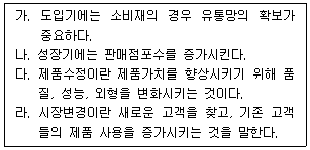
- 가, 다
- 나, 라
- 다, 라
- 가, 나, 다
- 가, 나, 다, 라
(정답률: 53%)
16. 유통경로(생산자-도매상-소매상-소비자) 내에 존재하는 보편적인 경로흐름 중에서 양방향성(forward and backward) 이 가장 강한 것은?
- 물적 소유권
- 주문
- 위험부담
- 촉진
- 대금지불
(정답률: 42%)
17. 일반적인 가격설정의 근거와 가장 거리가 먼 것은?
- 업계동향
- 수요동향
- 서비스의 질
- 법적규제
- 구매예산
(정답률: 26%)
18. 유통의 기능과 보기가 바르게 짝지어지지 않은 것은?
- 수(배)송기능 - 수현이 주문한 도서가 오후에 배송되었다.
- 보관기능 - 지현은 봄에 수확한 딸기를 가을에 판매하기 위해 냉동창고에 보관하였다.
- 정보전달기능 - 지원은 백화점으로부터 봄 정기세일 DM을 받았다.
- 위험부담기능 - 상철은 신형PC를 구매하기 위해 카드를 발급받았다.
- 거래기능 - 호연은 현금을 지불하고 커피를 구입하였다.
(정답률: 78%)
19. 다음의 보기 중 상품회전율과 마진(margin)에 의한 소매상의 구분으로 가장 적합하지 않은 것은?
- 낮은회전율과 고마진 : 백화점
- 높은회전율과 고마진 : 편의점
- 높은회전율과 저마진 : 할인점
- 높은회전율과 저마진 : 슈퍼마켓
- 낮은회전율과 저마진 : 전문점
(정답률: 53%)
20. 소매업체의 업종과 업태를 분류하는 기준에 대한 설명 중 가장 옳은 것은?
- 소유 및 운영 주체에 따라 점포소매상과 무점포 소매상으로 나눌 수 있다.
- 취급하는 상품의 종류에 따라 업태별로 분류할 수 있다.
- 판매하는 방법에 따라 업종별로 분류할 수 있다.
- 상품계열에 따라 완전서비스 도매상과 한정서비스 도매상으로 분류할 수 있다.
- 마진과 회전율 같은 소매상의 전략에 따라 나눌 수 있다.
(정답률: 39%)
21. 운송요금의 결정변수와 관련된 설명 중 옳지 않은 것은?
- 대형화된 운송수단에 적재되는 화물이 많을수록 화물단위당 부담하는 고정비 및 일반관리비는 낮아진다.
- 동일 중량이라면 부피나 면적에 상관없이 운송비가 동일하다.
- 취급이 어려울수록 운송비는 높아지게 된다.
- 화물의 밀도가 동일하더라도 적재성이 떨어지면 운송료는 높은 수준에서 결정된다.
- 운행거리가 '0' 이어도 고정비는 발생하기에 비용이 '0'이 아닌 경우도 발생한다.
(정답률: 71%)
22. 소매상과 비교할 때 도매상의 특징으로 가장 적합한 것은?
- 고객반응의 즉시성
- 입지의 중요성
- 경로의 다양성
- 충동구매성
- 지리적 분산
(정답률: 50%)
23. 구매조직 설계 대안 중 집중형 구매조직에 대한 설명으로 옳지 않은 것은?
- 중앙구매부서에서 구매관련 활동을 수행한다.
- 규모의 경제를 달성할 수 있다.
- 구매카드제를 활용하여 구매전문성을 제고한다.
- 과도한 간접관리비가 발생할 수도 있다.
- 재무이슈를 중앙에서 통제할 수 있다.
(정답률: 28%)
24. 유통경로상에서 중간상이 필요한 이유로 가장 옳지 않은 것은?
- 생산자는 소품종 대량생산, 소비자는 다품종 소량소비에 대해 원하는 격차를 해소할 수 있다.
- 거래할 때마다 발생하는 구색맞추기에 대한 불편함과 비효율을 개선할 수 있다.
- 생산자와 소비자 사이에 발생하는 공간적, 시간적 불편을 줄일 수 있다.
- 채찍효과로 인해 수요예측의 불확실성을 제거할 수 있다.
- 생산자와 소비자 상호간의 정보 불일치에 따른 불편을 줄이게 된다.
(정답률: 66%)
25. 과거에 비해 달라진 조직화의 경향에 대한 설명 중 가장 거리가 먼 것은?
- 불필요한 단계를 제거하면서 명령단계의 축소가 일어나기도 한다.
- 프로젝트팀이나 매트릭스조직이 등장하면서 명령 일원화의 원칙이 감소하기도 한다.
- 조직의 효율성을 위해 스태프부분을 축소하기도 한다.
- 명령단계가 축소되면, 한사람이 직접적으로 관리하는 부하직원의 수, 즉 통제범위가 축소되기도 한다.
- 분산화와 집중화가 동시에 진행되기도 한다.
(정답률: 43%)
2과목: 상권분석
26. 점포의 상권은 다양한 관점에서 경쟁분석이 이루어져야 하는데 이 중 적합하지 않은 것은?
- 상권의 위계별 경쟁구조 분석
- 업태별, 업태내 경쟁구조 분석
- 배후상권, 목표상권 고객 분석
- 잠재경쟁구조 분석
- 동종 점포 간 경쟁 및 보완관계 분석
(정답률: 27%)
27. 점포의 입지선정에 직접적인 영향을 주는 요인으로 보기 어려운 것은?
- 지역 내 주민의 인구통계학적 사항
- 지역 내 산업체의 수출품목 수와 종업원 수
- 지역 내 주민의 소득수준
- 지역 내 잠재고객의 구매관습
- 지역 내 고객이 원하는 상품의 종류
(정답률: 58%)
28. 우리 점포에서 제공되는 상품 외에도 다른 점포에서 판매되는 상품의 종류에 의해서도 고객의 크기가 결정될 수 있다고 볼 수 있는 원칙이 아닌 것은?
- 접근용이성의 원칙
- 중간저지성의 원칙
- 동반유인의 원칙
- 보충가능성의 원칙
- 점포밀집의 원칙
(정답률: 29%)
29. 한 지역의 가구수가 100가구이며 가구당 특정업태에 대한 지출비는 10,000원, 특정업태의 총 매장면적은 10,000,000m2 라고 한다. 현재 상황을 토대로 분석할 때 다음 제시되는 설명 중 가장 적합한 것은?
- 시장성장잠재력지수를 계산하면 1의 값이 계산되어 향후 해당 시장의 성장잠재력이 낮다고 볼 수 있다.
- 거주자들이 지역시장 이외의 다른 지역에서 쇼핑하는 경우가 많다고 볼 수 있어 시장잠재력은 크다고 판단할 수 있다.
- 시장포화지수가 매우 낮은 값으로 계산됨으로 특정업태에 대한 해당 지역의 시장은 이미 포화된 것으로 볼 수 있다.
- 가구당 특정업태에 대한 지출비중이 낮으므로 시장이 포화되었다고는 볼 수 없고 개선의 여지가 있다고 판단할 수 있다.
- 지역의 총가구수를 고려할 때 지역내 소비자가 이용할 수 있는 특정업태의 매장면적은 현재가 가장 적합한 상황으로 볼 수 있다.
(정답률: 26%)
30. 점포출점이나 기존 점포의 진단시 많이 활용하는 방법 중 하나가 소비자 FGI(focus group interview)기법이다. FGI에서 파악할 수 있는 내용으로 거리가 먼 것은?
- 소비자가 어떤 점포를 가장 많이 이용하고 얼마만큼의 쇼핑빈도를 갖고 있는지 파악할 수 있다.
- 분석대상점포의 서비스 수준을 경쟁 점포와 비교할 수 있다.
- 분석대상점포를 이용하는 소비자의 불만과 기대사항을 파악할 수 있다.
- 경쟁점의 내점 고객수를 효과적으로 파악할 수 있다.
- 소비자가 왜 분석대상점포를 이용하는지 파악할 수 있다.
(정답률: 57%)
31. 소매업태들의 입지에 대해 설명으로 가장 옳은 것은?
- 카테고리킬러는 도시 외곽에서 한 개의 점포를 넓게 입지하는 것보다는 도심에서 소규모의 다점포 전략을 사용하는 것이 적합하다.
- 백화점의 경우 제품 구색이 중요하므로 점포의 넓이를 크게 할 수 있는 도시 외곽에서 입지하는 것이 필요하다.
- 팩토리 아웃렛의 경우 회사 직영으로 운영하고 상품을 직접 제조기업에서 제공받을 수 있어 도심의 다양한 지역에 점포를 위치시켜 다양한 상품을 소량으로 판매할 수 있도록 하는 것이 필요하다.
- 회원제 도매클럽의 경우 자가용보다는 대중교통이 편리한 도심지역에 입지함으로써 접근성을 높여 상권의 범위를 높이려는 노력이 필요하다.
- 독립적 상권을 형성하기 어려운 소규모 점포의 경우 점포가 소재한 모점포의 상권형성 능력에 의해 상권의 규모가 결정된다.
(정답률: 59%)
32. 상권(trade area)에 대한 내용으로 올바르게 열거된 것은?
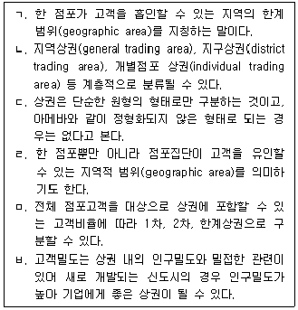
- ㄱ, ㄴ, ㄷ, ㄹ
- ㄴ, ㄷ, ㄹ, ㅁ
- ㄱ, ㄷ, ㅁ, ㅂ
- ㄷ, ㄹ, ㅁ, ㅂ
- ㄴ, ㄹ, ㅁ, ㅂ
(정답률: 53%)
33. 소매포화지수의 설명으로 옳지 않은 것은?
- 소매포화지수는 한 지역시장에서 기존의 점포만으로 고객욕구를 충족시킬 수 있는 상태를 나타내준다.
- 소매포화지수는 미래 신규수요까지 반영함으로써 미래 시장 잠재력을 측정할 때 유용하게 사용할 수 있다.
- 특정상권에서 소매포화지수값이 적어질수록 점포를 출점할 때 신중한 고려가 필요하다는 의미이다.
- 소매포화지수를 계산하는데 중요한 자료는 특정상권의 가구수와 특정상권의 가구당 소매지출액이다.
- 소매포화지수는 경쟁의 양적인 면만 강조되고 경쟁의 질적인 면은 반영하지 못하는 한계가 있다.
(정답률: 45%)
34. 점포의 유형에 대한 설명으로 옳지 않은 것은?(문제 오류로 확정답안 발표시 1, 4번이 정답처리 되었습니다. 여기서는 1번을 누르시면 정답 처리 됩니다.)
- 아파트 상가는 입주민의 복리를 위해 법적으로 의무화된 상가로 아파트의 규모, 상가규모, 입점업종 등에 따라 경쟁력이 형성된다.
- 근린 종합상가는 주거지구에 개발되는 집합상가를 의미하며 아파트상가보다는 규모가 크지만 인근에 위치하게 되므로 직접적인 경쟁관계가 된다.
- 지하상가는 도로 지하공간에 계획적으로 개발된 상가로 다수의 점포가 집적된 형태이므로 주변 도로의 경쟁력 크기가 상권규모가 된다.
- 대부분의 주상복합상가는 주택과 상가가 한 건물에 위치하는 형태로 같이 위치한 주택의 규모가 상가의 상권규모가 된다.
- 민자역사상가는 사업권자가 30년 사용권을 가지고 운영한 후 기부채납하는 상업시설로 역세권에 해당하는 상권범위와 접근성이 주요 경쟁력이 된다.
(정답률: 77%)
35. 상권측정에 대한 설명으로 옳지 않은 것은?
- 고객 흡인력이나 공헌도 등을 기준으로 활용하는 것도 상권범위를 설정하는 좋은 방법이다.
- 점두조사나 방문조사, 드라이브테스트는 일종의 경험적 상권측정 방법에 속한다.
- 경험적 상권측정을 위해 가장 중요한 것 중 하나는 실사를 통한 심층조사이다.
- 일반적으로 상권설정에 의한 매출예측은 통계적 기법이나 유사사례 비교법에 의한 방법보다 정확도가 높을 때가 많다.
- GIS를 사용하여 매출추정 과정을 시스템화하고, 이를 통해 매출액을 추정하는 상권측정 방법도 점차 확대되고 있다.
(정답률: 39%)
36. 이론적 상권분석 모델에 대한 설명으로 옳지 않은 것은?
- Reilly 모델에서는 작은 도시의 구매력이 큰 도시로 흡인된다는 것을 각 도시까지의 거리제곱에 비례하고 도시인구에 반비례한다는 것으로 설명하였다.
- Converse 모델은 소매인력의 제 2법칙이라고도 하며 각 도시에 상대적으로 흡입되는 구매력 정도가 동일한 분기점을 구할 수 있다.
- Huff 모델에서 매장면적과 거리저항에 대한 가중치를 매번 계산하여 부여하는 것은 소비자의 상업시설 선택에 영향을 미치는 정도가 상품과 지역에 따라서 일정치 않기 때문이다.
- 유추법은 일반적으로 CST분석을 토대로 이루어지고 있으며 신규점포 뿐만 아니라 기존점포에서도 활용할 수 있다.
- 독일 Christaller의 중심지 이론에서는 상업중심지로부터 가장 이상적인 배후상권의 모양이 육각형이며, 정육각형 형상을 가진 상권은 중심지거리의 최대도달 거리와 최소수요 충족거리가 일치하는 공간이라고 하였다.
(정답률: 49%)
37. A사는 패션점포를 출점하고자 부지를 찾았는데 점포예정 부지주변의 점포집적도가 낮아 출점 후 매출에 영향을 미칠 것으로 판단되어 계약을 망설이고 있다. A사는 어떤 인자 때문에 고민을 하는 것인가?
- 입지인자
- 구조인자
- 상권인자
- 경쟁인자
- 고객인자
(정답률: 44%)
38. 중심성 지수와 가장 관계가 없는 것은?
- 소매업의 공간적 분포를 설명하는데 도움을 주는 지표로써 유출입지수라고도 한다.
- 매장규모도 중심지 분석을 위해 파악해야 할 가장 중요한 자료중 하나이다.
- 소매업이 불균등하게 분포한다는 것은 소매업이 외곽지역보다 중심지에 밀집된 형태로 구성됨을 의미한다.
- 중심성 지수는 상업인구가 거주인구와 동일할 때 1이 되고, 상업인구가 많으면 많을수록 1보다 큰 값이 된다.
- 도시의 소매판매액을 1인당 소매구매액으로 나눈 값을 상업인구라 한다.
(정답률: 25%)
39. Huff 모델에서 고려되지 않는 것은?
- 매장규모
- 브랜드파워
- 매장과의 거리
- 접근제약성
- 소비자 출발점
(정답률: 66%)
40. 상권을 조사하는 방법 중 가장 옳지 않은 것은?
- 타인의 인터넷 블로그에 올려진 자료는 1차 자료에 속한다.
- 2차 자료의 유용성 기준은 데이터의 최신성과 분석목적에 부합되는지의 여부이다.
- 경험적 상권 설정방법에서는 1차 상권, 2차 상권, 3차 상권 등 고객 흡인력을 기준으로 상권범위를 제시하기도 한다.
- 고객의 상권범위를 파악하는데 가장 적합한 기법은 소비자 스포팅(CST)기법이다.
- 상권자료조사는 2차 자료를 먼저 조사한 후 1차 자료에 대해 조사하는 것이 좋다.
(정답률: 57%)
41. 도미넌트 출점의 장점으로 가장 거리가 먼 것은?
- 관리가 용이하다.
- 물류와 배송이 편리하다.
- 경쟁점의 출점을 제약시키는데 유리하다.
- 특정상권에서 시장점유율을 확대하는데 유리하다.
- 단위점포의 매장면적을 키우는데 유리하다.
(정답률: 47%)
42. 입지에 대한 설명으로 옳지 않은 것은?
- 입지분석과 관련한 모델들이 많지만 우리 실정에 맞지 않아 실제로 적용하기 어려운 경우가 있다.
- 마케팅 4P에도 사실상 입지의 중요성이 내포되어 있다.
- 넬슨은 입지선정의 원칙에서 점포를 어디에 출점할 것인지를 집적의 원리로도 주장하고 있다.
- 상권과 입지는 엄밀하게 구분되며 상권은 범위의 개념으로 입지는 지점의 개념으로 볼 수 있다.
- 목적점포로써의 아울렛은 전형적인 의존형 입지가 되므로 광역적인 수요 흡인이 매우 중요하다.
(정답률: 43%)
43. 입지와 규모에 따라 쇼핑센터를 구분한 내용으로 올바른 것은?
- 입지를 기준으로 쇼핑센터를 구분하면 근린형, 커뮤니티형, 지역형 등으로 나눌 수 있다.
- 커뮤니티형 쇼핑센터는 도보를 기준으로 상권을 형성하며 일용품 위주의 제품을 판매하는 경우가 많다.
- 지역형 쇼핑센터는 여러 가지 서비스 기능이나 레저스포츠 시설을 갖춘 경우가 많다.
- 도심형 쇼핑센터의 경우가 신도시 근처의 교외형 쇼핑센터의 경우보다 상권에 포함되는 고객이 명확하다.
- 도심형 쇼핑센터는 교외형 쇼핑센터보다 저층으로 된 넓은 면적을 활용하여 쇼핑공간을 설계한다.
(정답률: 27%)
44. 하버드 비즈니스 스쿨의 애플바움(W. Apple baum)교수의 유추법에 대한 설명으로 가장 옳지 않은 것은?
- 자사의 신규점포와 특성이 비슷한 기존의 유사 점포를 선정하여 매출액, 통행량, 구매력 비율, 객단가 등을 조사하여 정확한 수요를 찾는 방법이다.
- 각 지역에서의 1인당 매출액을 구하고, 예상 상권내의 각 지역의 인구수에 유사점포의 1인당 매출액을 곱하여 신규점포의 예상매출액을 구한다.
- 유통업자가 기존의 점포 근처에 신규점포를 개점하려고 한다면, 신규점포가 기존 점포의 고객을 어느 정도 잠식할 것인지를 고려해야 한다.
- 유추점포가 가지고 있는 흡인력을 조사한 후 대체입지의 예상매출과 상권을 추정하여 기대효과가 가장 높은 곳을 선정한다.
- 신규점포의 상권분석 뿐만 아니라 기존 점포의 상권분석에도 적용될 수 있으며, 쇼핑패턴을 반영하여 적용하기 쉽다는 특징이 있다.
(정답률: 15%)
45. 명희가 사는 곳은 A와 B 두 도시가 만나는 경계선으로 A도시의 상권중심지까지는 6km, B도시의 상권중심지까지는 3km 떨어져 있다. A도시의 인구가 10만명이고, B도시의 인구가 2만 5천명이라고 할 때 Converse 법칙을 이용하여 올바르게 설명된 것은?
- 명희가 사는 곳을 기준으로 한다면 B도시로 이동하는 것이 좋은 선택이 된다.
- A도시를 기준으로 했을 때 상권분기점은 6km 떨어진 곳에 위치해 있다.
- 인구보다는 상권규모를 활용하여야 하기 때문에 매출액을 구해서 계산해야 한다.
- 각 도시의 가계별 구매액이 10만원이면 B도시로 이동해야 구매의 질이 증가한다.
- B도시의 인구가 현재보다 4배 더 증가한다면 상권 분기점은 B도시로 이동하게 된다.
(정답률: 32%)
3과목: 유통마케팅
46. 마케팅전략 수립을 위해 분석해야 하는 마케팅 환경분석의 구성요소 중 미시적 환경분석에 해당하는 것은?
- 정치적 환경 분석
- 경제적 환경 분석
- 기술적 환경 분석
- 문화적 환경 분석
- 구매자 심리 분석
(정답률: 53%)
47. 전략적 소매 계획과정으로 바르게 짝지어진 것은?
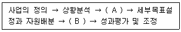
- A: SWOT분석 B: 입지전략개발
- A: 전략적 기회분석 B: 소매믹스개발 및 실행
- A: 전략적 기회분석 B: 상권분석 및 점포개설
- A: SWOT분석 B: 입지분석 및 점포개설
- A: 상권분석 B: 입지분석 및 점포개설
(정답률: 53%)
48. 소매업체의 성장전략에 대한 설명으로 올바른 것을 모두 나열한 것은?
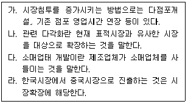
- 가, 다
- 나, 라
- 나, 다
- 가, 나, 라
- 가, 나, 다, 라
(정답률: 49%)
49. 점포 분석시 고려할 사항에는 경영능력, 재무자원, 점포운영, 상품특성, 점포입지, 고객요인 등이 있다. 이들 중에서 점포운영과 관련된 내용이 아닌 것은?
- 간접비구조
- 경영정보시스템
- 배송능력
- 안전시스템
- 기존 점포로부터 현금 유입
(정답률: 47%)
50. 고객의 구매행동 및 욕구에 대한 설명으로 가장 옳지 않은 것은?
- 고객의 욕구는 소득, 취미, 학력, 가족구성 및 고객 자신의 성격에 따라 다르다.
- 합리적인 구매뿐만 아니라 막연한 기분이나 무드에 끌려 구매하기도 한다.
- 일반적으로 고객은 습관적 소비 성향을 보이며 새롭거나 신비한 것에 끌리지 않는다.
- 가처분 소득이 상승할수록 시간, 장소, 상황에 의한 소비 성향이 현저해진다.
- 고객은 상품의 소유뿐만 아니라 상품을 사용해서 얻는 이익 또는 상품의 소유에서 생기는 효용을 위해 구매한다.
(정답률: 64%)
51. 서비스의 구매 특징에 대한 설명으로 가장 옳지 않은 것은?
- 물리적 상품과 비교하여 서비스는 무형성 때문에 경험적/신념적 특성보다 탐색적 특성을 갖는다.
- 서비스는 일반적으로 대중매체 보다는 친구와 같은 인적 정보원에 크게 의존하는 경향이 있다.
- 물리적 상품에 비해 서비스는 구매 전보다 구매 후의 관련 정보에 더욱 민감하다.
- 일반적으로 서비스는 혁신의 수용정도가 물리적 상품과 비교하여 상대적으로 낮다.
- 서비스는 새로운 브랜드로의 전환가능성이 물리적 상품과 비교하여 상대적으로 낮다.
(정답률: 29%)
52. 판매원과 판매활동에 대한 설명으로 가장 옳지 않은 것은?
- 판매활동은 구매자가 구매결정을 내릴 수 있도록 설득하는 활동을 말한다.
- 상품의 희소성과 과시성과 같은 특성도 판매를 위한 상품지식으로 활용된다.
- 고객과의 감정적 유대에 어필하여 판매원을 위해서 사는 것으로 구매를 유도한다.
- 상품의 물리적인 특색뿐만 아니라 상품의 효용을 알려 상품의 가치를 전달한다.
- 상품정보는 물론 유행정보 및 생활정보를 제공하는 컨설턴트로서의 역할을 수행한다.
(정답률: 71%)
53. 다음은 어떤 진열에 대한 설명인가?
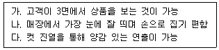
- 곤도라 진열(gondola display)
- 엔드 진열(end display)
- 행거 진열(hanger display)
- 섬 진열(island display)
- 벌크 진열(bulk display)
(정답률: 32%)
54. 경쟁자가 가격을 인하함에 따라 자사의 수익에 악영향을 미칠 경우, 효과적으로 대응하는 의사결정으로 적합한 것을 모두 나열한 것은?
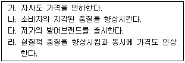
- 가, 다
- 나, 라
- 나, 다
- 가, 나, 라
- 가, 나, 다, 라
(정답률: 36%)
55. 가격 결정 방법 중 소비자 중심 가격 결정방법에 해당되는 것은?
- 원가가산법(markup pricing)
- 목표수익률가격(target-return pricing)
- 가치가격법(value-pricing)
- 경쟁사모방 가격결정법(going-rate pricing)
- 공개입찰에 의한 가격결정법(sealed-bid pricing)
(정답률: 44%)
56. 점포의 디자인과 구성에 대한 설명으로 가장 옳지 않은 것은?
- 점포의 외관은 점두(storefront)와 진열창(show window)으로 구성된다.
- 점포의 외관은 고객을 흡인하는 효과뿐만 아니라 목표고객이 아닌 고객이 방문하지 못하게 하는 역기능도 있다.
- 점포의 내부는 고객의 구매심리를 적극적으로 유발할 수 있도록 구성해야 한다.
- 점포의 레이아웃은 사전 상권조사를 통한 점포 컨셉트를 설정한 다음에 설계되어야 한다.
- 점포 레이아웃은 점포의 존재를 알리고 통행인을 유입할 수 있는 시각성(또는 가시성)이 있어야 한다.
(정답률: 16%)
57. 점포 레이아웃(store layout)에 대한 설명으로 가장 옳은 것은?
- 매장과 비매장, 통로, 집기(什器), 디스플레이 도구와 진열장, 상품 등과 건물의 고정 시설들이 서로 적절한 관련성을 갖도록 정리 정돈하는 것을 말한다.
- 주로 규모가 작은 전문점 매장이나 여러 개의 작은 전문점 매장이 모여 있는 다형점포에서 채택하는 레이아웃 방식이 격자형(grid－type)배치이다.
- 전반적으로 제품을 진열하는 매장 공간, 고객서비스 공간, 창고 등과 같은 점포의 주요 기능공간의 규모와 위치를 간략하게 보여주는 것을 블록(block)계획이라 한다.
- 구성부문의 실제 규모와 형태까지 세부적으로 결정하며, 고객서비스, 상품보관 등의 기능적 필요나 크기에 따라 배치하는 것을 버블(bubble)계획이라 한다.
- 기둥이 많고 기둥 간격이 좁은 상황에서도 설비비용을 절감할 수 있으며, 통로 폭이 동일하기 때문에 필요 면적이 최소화되는 것이 자유형(free－form)배치이다.
(정답률: 41%)
58. 가격정책의 유형과 그에 대한 설명으로 옳지 않은 것은?
- 차별가격정책: 동종/동량의 제품을 고객에 따라 상이한 가격을 결정
- 계열가격정책: 규격, 품질, 기능, 스타일 등이 다른 각 제품계열마다 상이한 가격을 결정
- 오픈프라이스정책: 권장소비자가격보다 다소 할인하여 제조업자가 판매가격을 결정
- 생산지점가격정책: 모든 구매자에 대하여 균일한 출고가격을 적용
- 침투가격정책: 신속하게 시장에 침투하기 위해 신제품 도입 초기에 저가격을 설정
(정답률: 38%)
59. 특정 소매점에서 A제품에 대하여'가격할인'과 '프리미엄제공'이라는 2개 판촉전략을 한달간 실행하였다. 그 기간동안 카드로 A제품을 구매한 20대, 30대, 40대, 50대로 분류하여 판촉활동의 매출액 증감효과 차이를 분석하고자 할 경우, 가장 적합한 분석기법은?
- t-검증
- 회귀분석
- 군집분석
- 분산분석
- 판별분석
(정답률: 36%)
60. 소매상의 판매증진을 위한 가격전략에 대한 설명으로 올바르게 짝지어진 것은?(문제 오류로 확정답안 발표시 모두 정답처리 되었습니다. 여기서는 1번을 누르면 정답 처리 됩니다.)
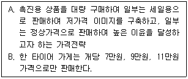
- A: 경쟁가격, B: 가격라인
- A: 경합가격, B: 미끼상품가격
- A: 로스리더, B: 홀수가격
- A: 미끼상품가격, B: 고저가격
- A: 선도가격, B: 가격라인
(정답률: 50%)
61. 고객응대기법에 대한 설명으로 가장 옳지 않은 것은?
- 고객대기란 언제, 어떠한 경우에도 판매자가 고객을 맞이할 수 있는 준비와 마음가짐이 되어 있는 상태를 포함한다.
- 접근은 실질적인 판매의 출발점으로 고객이 판매원에게 느끼는 첫인상이 판매활동의 진행에 큰 영향을 미친다.
- 판매를 성공시키기 위해서는 판매원은 고객욕구와 구매계획 등에 대해 가능한 많은 지식과 정보를 획득해야 한다.
- 판매제시는 상품을 고객에게 실제 보여주고 상품에 대해 이해시키는 활동으로 상품의 실연과 설명이 핵심이다.
- 판매결정이란 고객이 구매를 결정하여 제품의 대금을 수령/입금하고 상품의 포장과 인계가 마무리 된 것까지를 말한다.
(정답률: 50%)
62. 표적 구매자시장 결정 전략으로 올바르게 짝지어진 것은?
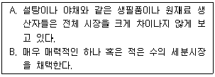
- A: 비차별전략, B: 차별화전략
- A: 차별화전략, B: 비차별화전략
- A: 비차별화전략, B: 집중화전략
- A: 차별화전략, B: 집중화전략
- A: 차별화전략, B: 차별화전략
(정답률: 46%)
63. 상품관리에 대한 내용으로 가장 옳지 않은 것은?
- 상품관리 기능 중 하나는 적정한 상품구성을 실현하는 일이다.
- 상품관리는 적정한 재고량을 유지하는데 있어 중요한 기능을 발휘한다.
- 적정한 1회 발주량을 결정하는 것은 상품관리의 중요한 활동이다.
- 보관 중 상품이 손상되지 않도록 관리하는 것도 상품관리에 해당된다.
- 상품의 판매를 위해 마케팅 믹스를 결정하는 것을 포함한다.
(정답률: 49%)
64. 마케팅조사는 그 목적에 따라 세 가지 유형으로 구분된다. 아래의 괄호 안에 들어갈 용어로 알맞은 것은?
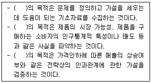
- 탐색적 조사-기술적 조사-인과적 조사
- 인과적 조사-기술적 조사-탐색적 조사
- 기술적 조사-탐색적 조사-인과적 조사
- 탐색적 조사-전략적 조사-전술적 조사
- 1차 자료 조사-2차 자료 조사-설문 조사
(정답률: 41%)
65. 예상 매출액 중 고정비율로 촉진예산을 설정하는 방법은?
- 가능예산방법
- 고정매출액방법
- 판매비율방법
- 경쟁동가방법
- 한계분석방법
(정답률: 23%)
66. 성장기에 속한 소매업체가 선택할 수 있는 대안으로 가장 적절한 것은?
- 이 시기에는 비용절감이 최우선 과제이다.
- 경쟁우위 전략을 개발하여 적극적인 시장점유율을 확대하도록 한다.
- 제공되는 서비스의 수를 감소시키고, 이윤이 창출되는 서비스에 집중한다.
- 경쟁자의 수가 가장 많은 시기이므로 신규 출점을 축소한다.
- 제품 개선을 위한 연구개발투자를 늘린다.
(정답률: 62%)
67. 아래에서 설명하고 있는 내용에 가장 적합한 분석방법은?
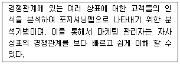
- 중요도-만족도(I-S) 분석기법
- RFM(Recency, Frequency, Monetary) 분석기법
- 다차원척도(MDS) 분석기법
- 연관성(Association rules) 분석기법
- 델파이(Delphi) 분석기법
(정답률: 26%)
68. 상품의 구색은 상품군(계열)의 다양성을 의미하는 ( A )와(과), 특정상품군내에서의 브랜드 다양성을 의미하는 ( B )에 의해서 결정된다. 이렇게 구색을 갖춘 후, 상품군과 브랜드의 합을 ( C )이라 한다. ( )에 들어갈 가장 적절한 개념으로 짝지어진 것은?(문제 오류로 확정답안 발표시 모두 정답처리 되었습니다. 여기서는 1번을 누르면 정답 처리 됩니다.)
- A: 깊이, B: 폭, C: 넓이
- A: 폭, B: 깊이, C: 길이
- A: 넓이, B: 길이, C: 깊이
- A: 길이, B: 폭, C: 단품
- A: 폭, B: 길이, C: 넓이
(정답률: 66%)
69. 아래에서 설명하는 시장전략은?
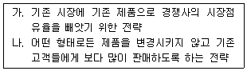
- 시장침투전략
- 시장개척 전략
- 제품개선전략
- 다각화전략
- 외부성장전략
(정답률: 71%)
70. 소비자들은 일상생활에서 구매의사결정을 단계적으로 하게 되는데, 이러한 의사결정단계에 대한 설명으로 가장 옳지 않은 것은?(문제 오류로 확정답안 발표시 4, 5번이 정답처리 되었습니다. 여기서는 4번을 누르시면 정답 처리 됩니다.)
- 인간은 자신의 주어진 상황에서 현재의 상황이 부적절하다고 판단하게 되면 적절한 상황이 되도록 수단을 찾게 되는데 이것을 문제의 인식(problem recognition)단계라고 한다.
- 정보탐색(information search)단계에서 마케팅관리자의 임무로는 '정보 원천의 종류와 각 정보원천의 특성을 분석'하며, '각 정보원천이 소비자에게 미치는 영향을 분석'한다.
- 대안평가(alternative evaluation)단계에서는 소비자들의 대안평가시 주요 요소들은 제품의 특성, 중요성, 상표신념, 효용함수 등이 있다. 최적의 대안은 소비자에게 가장 큰 효용을 제공하는 것이다.
- 정보탐색(information search)단계에서는 소비자는 여러 대안을 평가한 후에 가장 선호하는 브랜드나 제품을 선택하게 되는데 최종구매의 단계에서도 상황적인 요인이나 주변사람들의 브랜드나 제품에 대한 태도 때문에 최종선택을 미루거나 바꾸는 일이 발생한다.
- 승용차나 고가의 가전제품 등과 같은 고관여 제품을 구매한 경우에 자신의 구매활동에 대한 결과를 평가하게 되는 단계가 구매후평가(post-purchase evaluation)단계이며, 이는 구매행위 이후의 제품에 대한 불만족으로 나타나기 쉽다.
(정답률: 57%)
4과목: 유통정보
71. RFID태그 선택시 고려사항으로 가장 옳지 않은 것은?
- 판독의 정확도를 최대한 높이려면 부착면 소재와 관계없이 이용할 수 있는 태그 제품을 선택해야 한다.
- 업무 처리 속도와 관련하여 태그를 읽는데 필요한 속도를 파악하여야 한다.
- 태그를 사용할 환경 조건을 파악하여야 한다.
- 특정한 한 곳의 판독 지점에서만 RFID 태그를 읽는데 필요한 거리를 파악하여야 한다.
- 선택한 태그로 원하는 기간 동안 데이터를 저장할 수 있는지를 확인하여야 한다.
(정답률: 53%)
72. 유선인터넷과 비교하여 무선인터넷만의 서비스 특징을 가장 잘 나타낸 것은?
- 연결성
- 접근성
- 보안성
- 개인성
- 편리성
(정답률: 23%)
73. 지식경영을 모델링하는데 특히 잘 적용될 수 있는 '지능형 복잡 적응 시스템(Intelligent Complex Adaptive Systems)'에 대한 내용으로 가장 옳지 않은 것은?
- 복잡 적응 시스템은 서로 상호 작용하는 다수의 독립적인 행위자들로 구성된다.
- 복잡 적응 시스템은 창발적 현상의 형태를 통해 자기 조직화한다.
- 복잡 적응 시스템에는 독립적인 각각의 행위자들이 수행해야 하는 행위들을 감독하는 전체적인 권한이 존재한다.
- 복잡 적응 시스템에서 복잡한 행위들에 대한 전체적인 패턴은 행위자들의 상호작용 결과로서 발생하거나 출현되는 것이다.
- 복잡 적응 시스템에서는 행위자들의 행위들이 복합됨으로써 복잡한 적응 현상이 발생한다.
(정답률: 46%)
74. CRM구축과정으로 가장 옳은 것은?
- 고객이해→현황파악→기반구축→검토→설계→개발→실행
- 현황파악→기반구축→고객이해→검토→설계→개발→실행
- 현황파악→기반구축→고객이해→설계→개발→실행→검토
- 고객이해→현황파악→기반구축→설계→개발→실행→검토
- 현황파악→고객이해→기반구축→검토→설계→개발→실행
(정답률: 19%)
75. 인터넷 마케팅의 장점으로 가장 옳지 않은 것은?
- 고객과 일대일 상호의견을 전달함으로써 고객만족을 극대화할 수 있다.
- 가격, 품질, 정보 등에서 차별화되고 경쟁력 있는 제품과 서비스를 고객에게 제시할 수 있다.
- 고객의 정보를 활용하여 미래의 구매를 기대할 수 있는 고객 데이터베이스 마케팅을 할 수 있다.
- 글로벌 시장을 대상으로 한 판매망의 구축이 가능하고, 경쟁기업이 증가하므로 고객점유율 확대가 오프라인 마케팅에 비해 용이해 진다.
- 소비자 타겟 집단에 접근이 가능하게 되어 거래비용을 절감시키므로 가격 경쟁력 확보가 가능하다.
(정답률: 36%)
76. 송신자의 신분을 확인하고 해당 네트워크에 엑세스할 수 있는 권한을 부여하는 과정에 적합한 용어는?
- 기밀성
- 인증
- 무결성
- 터널링
- 부인봉쇄
(정답률: 56%)
77. QR(Quick Response)시스템에서 점포에 그대로 진열할 수 있도록 행거(hanger) 설치와 가격 태그(tag)가 부착된 상품이 물류센터를 경유하지 않고 공장으로부터 소매점포로 직접 보내는 것을 지칭하는 용어는?
- ECR(Efficient Consumer Response)
- EDI(Electronic Data Interchange)
- FRM(Floor Ready Merchandise)
- ASN(Advanced Shipping Notice)
- ABC(Activity Based Cost)
(정답률: 45%)
78. 유통정보시스템을 위한 데이터베이스 구축 시, 용도별로 관련 데이터가 가장 바르게 나열된 것은?
- 고객서비스 - 주문 및 견적
- 판매물류 - 창고관리
- 판매/영업 - 입찰
- 상품/생산 - 판매수당
- 조달물류 - 외상매출
(정답률: 38%)
79. 데이터는 정보로 변환되고, 정보는 지식으로 변환되어 기업의 의사결정에 기여하게 된다. 다음 중 데이터를 정보로 전환하는 데 필요한 중요한 활동으로 가장 적합하지 않은 것은?
- 맥락화
- 분류
- 정정
- 대화
- 축약
(정답률: 69%)
80. 바코드 인쇄시 가이드라인에 대한 설명으로 가장 옳지 않은 것은?
- 일반적으로 소매상품의 경우 상품의 뒷면 좌측 하단에 바코드를 인쇄한다.
- 바코드 위치는 일반적으로 상품의 가장자리에서 8mm ~ 100mm의 거리를 유지한다.
- 상품이 원통형인 경우 가능한 바코드를 세워서 인쇄한다.
- 상품이 매우 얇은 경우 일반적으로 상품의 윗면에 바코드를 인쇄한다.
- 대형 상품(중량 13Kg 이상, 길이 45Cm 이상)의 경우 앞면과 뒷면 2개의 바코드를 인쇄한다.
(정답률: 20%)
81. 신용카드의 PG(Payment Gateway)서비스는 대표가맹점 서비스와 자체가맹점서비스 2가지가 있다. 다음 중 이에 대한 설명으로 가장 옳지 않은 것은?
- 대표가맹점서비스는 PG업체가 중소형 온라인 쇼핑몰을 대표하여 신용카드사와 대표가맹점계약을 체결하고 거래승인, 매입, 정산 등의 업무를 대행하는 서비스이다.
- 대표가맹점서비스는 카드결제정보가 PG서버에서 처리됨으로써 결제의 안정성과 신뢰성에 문제가 있다.
- 자체가맹점서비스는 온라인 쇼핑몰이 신용카드사와 가맹점 계약을 직접 체결하고 PG업체는 결제정보를 중계한다.
- 자체가맹점서비스에서의 정산은 신용카드사가 온라인 쇼핑몰과 함께 직접 처리한다.
- 온라인 쇼핑몰은 대표가맹점서비스 보다 자체가맹점서비스를 이용할 때 보다 신속하게 판매대금을 받을 수 있다.
(정답률: 30%)
82. 크로스도킹(Cross Docking)에 대한 설명으로 가장 옳은 것은?
- 케이스(Case) 크로스도킹은 가장 단순한 형태의 크로스도킹으로 한 종류의 상품으로 적재된 팔레트별로 입고되어 소매점포로 직접 배송되는 형태이다.
- 팔레트(Pallet) 크로스도킹은 한 종류의 상품으로 적재된 팔레트 단위로 물류센터에 입고되면 각각의 소매점포별로 주문수량에 따라 피킹이 이루어지는 형태이다.
- 크로스도킹은 입고 및 출고를 위한 작업의 긴밀한 동기화를 필요로 한다.
- 크로스도킹은 항상 보관 및 피킹 작업으로 인해 물류비용이 증가할 수 있다.
- 사전 분류된 팔레트 크로스도킹은 물류센터에서 소매점포별로 주문수량을 팔레트단위로 처리한다.
(정답률: 35%)
83. 암묵적 지식을 사회화하는 구체적 방법으로 가장 옳지 않은 것은?
- 직접적 관찰
- 실험과 비교
- 모방
- 작업 공유
- 클러스터링
(정답률: 35%)
84. 의사결정지원시스템의 활용을 촉진하는 이유에 대한 설명으로 가장 옳지 않은 것은?
- 경영자에게 공급되는 데이터양의 폭증에 따라 컴퓨터를 활용한 정보처리의 필요성이 대두되기 때문에
- 업무전산화, EDI, SCM 도입 등으로 신속한 의사결정의 필요성이 증대되기 때문에
- 의사결정지원시스템은 의사결정모형이나 분석의 틀을 적절히 활용할 수 있게끔 제공되기 때문에
- 의사결정지원시스템은 경영자적인 유연성과 판단력을 토대로 문제에 관한 통찰력을 지니기 때문에
- 정보통신기기의 지속적인 가격인하로 시스템 구축에 소요되는 비용과 시간이 절감되기 때문에
(정답률: 27%)
85. 백화점과 할인점에서 정육, 청과 등의 신선상품에 주로 이용하는 바코드 입력방법은?
- 포스(pos)마킹
- 푸쉬(push)마킹
- 소스(source)마킹
- 인스토어(instore)마킹
- 풀(pull)마킹
(정답률: 50%)
86. 바코드에 대한 설명으로 가장 옳지 않은 것은?
- 상품식별코드(바코드번호)는 상품의 원산지를 나타낸다.
- GS1 DataMatrix는 다양한 추가정보를 입력하면서도 작은 크기로 인쇄가 가능하며 전 세계 의료분야에서 널리 활용되고 있다.
- GTIN-14는 유통업체에 납품되는 박스상품 단위에 부여되는 14자리 번호로써 ITF-14에 입력되어 사용할 수 있다.
- 표준바코드를 부착할 권리와 의무는 상품의 브랜드를 보유한 업체가 가지고 있다.
- 수입제품에 13자리 GS1 표준바코드가 사용되었다면 해당 상품의 바코드를 그대로 국내에서 사용이 가능하다.
(정답률: 26%)
87. RFID작동원리에 대한 설명으로 옳은 것은?
- 칩과 안테나에 맞는 정보를 리더에 입력하고 박스, 팔레트, 자동차 등에 부착한다.
- 게이트, 계산대, 톨게이트 등에 부착된 안테나에서 리더를 통해 발사된 주파수가 태그에 접촉한다.
- 리더는 전송받은 데이터를 변조하여 안테나로 전달한다.
- 태그는 주파수에 반응하여 입력된 데이터를 안테나로 전송한다.
- 안테나는 데이터를 해독하여 호스트 컴퓨터로 전달한다.
(정답률: 30%)
88. POS시스템을 활용한 유통업체의 이점에 대한 설명으로 가장 옳지 않은 것은?
- 인건비 절감
- 경쟁 상품과의 판매 경향 비교 및 분석
- 효율적인 상품구색 및 진열 관리에 이용
- 기회손실 최소화를 통한 매출의 극대화
- 점검 및 정산처리의 간소화
(정답률: 31%)
89. “정보가 일정기간 이후 소멸되는 상태나 현상”을 무엇이라 하는가?
- 정보의 과부화성
- 정보의 비적시성
- 정보의 불확실성
- 정보의 단순성
- 정보의 휘발성
(정답률: 58%)
90. 자동발주시스템(CAO : Computer Assisted Ordering)이 효율적으로 운영되기 위한 조건으로 가장 적합하지 않은 것은?
- 수요관리의 분산화
- 정확한 스캐닝
- 수작업의 제한
- 물류활동과의 일체화
- 일별/주별 변화에 대한 계획
(정답률: 29%)